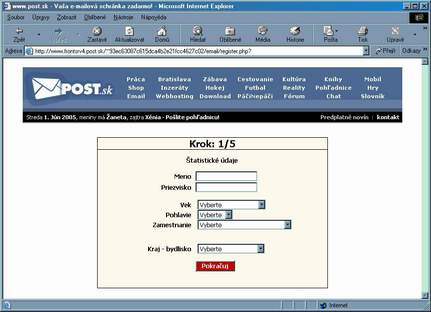

Komunikácia na internete
Komunikáciu na internete rozdeľujeme na interaktívnu (online) a neinteraktívnu.
- interaktívna
- Pri tejto forme komunikácie sa predpokladá že obaja účastníci sú súčasne - v tom istom čase - pripojený na komunikačnej linke a pri komunikácii
sa očakáva okamžitá odpoveď na podnet. Najčastejšie sa stretávame s týmito formami:
- ICQ - dnes je už na ústupe. Na komunikáciu sa používa špeciálny program cez ktorý sa zaregistrujeme, dostaneme pridelené ICQ číslo.
Písomná komunikácia môže prebiehať online, ale možno príjemcovi zanechať odkaz aj keď nie je online.
- chat - nie je potrebný špeciálny program, komunikácia prebieha cez ľubovoľný prehliadač v písomnej forme.
Existuje viacero serverov ktoré poskytujú možnosť chatovania na rôznej úrovni,
často poskytujú "virtuálne miestnosti", kde sa virtuálne stretávajú ľudia s podobnými témami (šport, kultúra, politika, zoznamka a pod.).
Niektoré servre vyžadujú registráciu niektoré nie. Pre mladistvých je často rizikom navštevovať podobné stránky, lebo niektorí diskutujúci
majú dosť nepríjemný slovník a v argumentácii často siahajú ku vulgarizmom.
Medzi zaujímavé a neškodné chatovanie patrí "rozhovor" s počítačom na stránke ludvik.sk
- skype,VoIP - špeciálnz program, ktorý umožňuje prenos písaného textu, hovoreného slova i obrazový-video prenos. Užívateľ sa zaregistruje,
(prezradí svoje údaje, ktoré chce zverejniť a cez ktoré ho iní užívatelia môžu nájsť) vytvorí si login - prihlasovacie meno a prihlasovacie heslo.
Systém umožňuje vyhľadávať iných užívateľov tejto komunity a ponúknuť sa do zaradenia medzi kontakty. S ľuďmi uvedených v kontaktoch, môžme
komunikovať písmom i hovoreným slovom, tiež umožňuje zasielať súbory - napr. obrázky.
- sociálne siete - komplexnejšia komunikácia, okrem chatu umožňuje zdielanie obrázkov, audio a video súborov, vytváranie virtuálnych priateľstiev.
Obľúbené je vytváranie rôznych skupín, ktoré fungujú na princípe diskusných skupín - môžme písať všetkým členom skupiny alebo napr. odpovedať
len jednému členovi skupiny. Pre našu školu bola na facebooku vytvorená skupina "priznanie gvbn" https://www.facebook.com/PriznanieGVBN/,
kde žiaci písali, čo sa im na škole páči a čo nie.
- neinteraktívna komunikácia
- Tu sa nevyžaduje aby účastníci boli pripojený na komunikačný kanál v tom istom čase. Dôraz je na tom, aby bolo možné zaslať správu aj užívateľovi, ktorý je
v danom čase nedostupný. Týmto sa takáto internetová komunikácia podobá napr. klasickej pošte prípadne SMS správe.
Pošta - email
- Princíp
- Užívateľ internetu si môže na niektorých počítačových serveroch vytvoriť poštové konto, čím získa adresu a v nej schránku. Obsah tejto schránky je potom
prístupný len pre toho užívateľa a pred ostatnými je chránený heslom. Je na užívateľovi aby túto svoju adresu dal do povedomia okruhu svojich
známych, ktorí mu na túto adresu môžu zasielať elektronickú poštu.
Zasielaná správa sa skladá:
- hlavička
- from (od koho)
- to (komu)
- c,cc (kópia bežná, utajená)
- subject (predmet)
- telo - prvý/úvodný diskusný mail by mal obsahovať : oslovenie, správu, podpis
- prílohy - prílohou môžu byť ľubovoľné súbory. Niektoré servre kontrolujú prípony súborov a nedovolia prijať prílohu s koncovkou *.exe
takéto súbory je vhodné pred odoslaní skomprimovať na *.zip
Nie je bežné zasielať mailom súbory väčšieho rozsahu - zaťažuje to sieť a príliš veľké súbory môžu spôsobiť, že mail vôbec nepríde.
- Výhody elektronickej pošty
- rýchlosť - spravidla do 1 hodiny
- prístup k pošte - užívateľ má prístup ku svojej pošte z každého miesta kde je internet.
- anonymita pošty - vhodné napr. na zoznamovanie
- zadarmo - oproti klasickej pošte nepotrebujeme kúpiť obálku a známku
- hromadná korešpodencia - list možno jednoducho poslať naraz aj väčšiemu počtu ľudí
- pohodlnosť - nemusím nosiť list na poštu
- Nevýhody elektronickej pošty
- presnosť adresy - pri klasickej pošte adresa "nemusí" byť úplne presná a list príde
- anonymita odosielateľa - často nevieme určiť, kto nám to píše
- ak vypadne internet/PC - pošta bude nedostupná
- Ak sa nám niekto nabúra do konta máme po pošte
- nedá sa poslať s potvrdením o odoslaní ako napr. "doporučená zásielka"
- Ako začať
- Zvolíme si poštový server - existuje veľké množstvo poštových serverov, ktoré ponúkajú túto službu zadarmo. (post.sk, centrum.sk, gmail.com,...)
Pri voľbe toho "správneho" si všímame:
- recenzie od známych - skúsenosti
- ponúkaný pamäťový priestor
- spoľahlivosť
- príjemnosť prostredia v ktorom poštu spravujeme
- doplnkové služby - ochrana pred spamom a pod.
- Vytvoríme si konto (musime zadať login a password a aj ďalšie údaje o sebe - meno, vek, adresu)
(údaje nie sú kontrolované a často si užívateľ údaje upraví/vymyslí podľa svojho priania)
Je dôležité si uvedomiť, že nie všetky krajiny majú rovnaké zákony, čo sa týka prístupu mladistvých na internet,
napr. google často aplikuje aj USA zákony, ktoré sú dosť nekompromistné ohľadom prístupu mladistvých na web.
Obyčajne je postačujúci vek 15 a viac.


Je dôležité si uvedomiť, že tak si my môžme zadať pri vytváraní konta skoro ľubovoľnú identitu, podobne môžu postupovať aj viacerí
a preto treba byť opatrný pri komunikácii.
- skúsime sa prihlásiť

- naučíme sa využívať možnosti poštového klienta
(najmä čítať poštu, vymazať nepotrebné správy, odpovedať na poštu, predať poštu ďalej)
(neskôr je dobré naučiť sa poštu deliť do priečinkov, vytvárať si adresáre ľudí)
- pravidlá
Je zvykom (najmä ak píšeme na iný poštový server) písať bez diakritiky, lebo existuje viacero spôsobou kódovania
slovenčiny a prijímateľovi správy sa namiesto slovenských písmen môžu zobrazovať obdĺžničky.
Vždy zadávajme predmet správy - väčšina ľudí správu, ktorá nemá zadaný predmet ani neotvorí ale ju hneď vymaže
(a tak je to aj správne).
Nepodľahnúť čaru anonymity - písať ľuďom hanlivé, urážlivé texty a pod.
- píšeme správu
- vypíšem adresu
- alebo zvolím adresu/adresy zo zoznamu kontaktov
- alebo na aktuálnom maily zvolím možnosť Reply
- alebo zadám názov skupiny kontaktov, ktorým chcem mail poslať
- Ak chcem môžem zadať komu chcem aby sa poslala kópia mailu
- Zadám predmet - stručný popis o čom je správa
- Vypíšem telo
- Vložím prílohy
- píšem odpoveď - Reply
- Volím ak chcem odpovedaťna mail. Adresa aj predmet sa vyplnia automaticky. Väčšinou sa klient opýta, či pôvodná správa má byť
súčasťou mojej odpovede - obyčajne volíme áno, prijímateľ skôr pochopí na ktorý mail vlastne odpovedáme.
- Poslať ďalej - Forward
- Na aktuálnom maily zvolím možnosť poslať ďalej, potom vyplním adresné pole a môžem upraviť aj telo správy a zvolím odoslať.
- Presmerovanie
- Niektorým správam (ale môžem aj všetkým) môžem nastaviť pravidlo aby boli odoslané na iné konto (to konto musí potvrdiť,
že s tým súhlasí). Používame vtedy, ak vlastníme viacero kont a chceme mať niektorú poštu pokope.
- Pravidlá pre došlú poštu
- Pre došlú poštu možno určiť pravidlá
- do ktorého priečinka sa má uložiť
- presmerovať na iný server
- blokovať
- odoslať správu o prečítaní
- Špeciality pre odosielanú poštu
- Odosielanej správe možno nastaviť:
- dôležitosť
- žiadosť o potvrdenie o prečítaní
- pre všetky odosielané správy možno nastaviť vloženie nakoniec tela správy automatický podpis